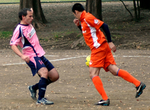
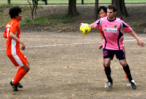

|
Mitsuike Koen, Saturday 24th October.
Mitsuike Koen was the scene for the garish clash between Orange and Pink early doors on Saturday. The pitch is relatively short in length and surrounded by trees, giving it an enclosed feel which really helped to crank up the volume of both teams travelling hoards of fans who had come in impressive numbers. Full warm-ups complete, the pitch marked and it was game on. Although again the Panthers ability to draw a straight line on a pitch was called into question, with their mighty captain as ever leading by example. Veiw photographic evidence here.
The early exchanges were well fought and it was a very even start to the match. Both teams finding their way on the dirt pitch and trying to get it down and play some football. The ball was pinging around in the middle with the Dutch pushing forward and enjoy good early possesion but without a clear cut chance. The Panthers were looking to force the ball wide a little better and seek the space on the flanks which was lacking in a tight midfield. Mori was starting to have more influence on proceedings and debutant Niko was seeing a lot of the ball at left back on his pink debut, looking solid.
Having spent the early exchanges on the back foot, the Panthers started to push forward with first Kei testing the keeper from outside the box and then Ben flashing a shot wide from a nice lay off from Sako. Sako in for the absent Sho up front, was working tirelessly and he got his reward 10 minutes before half time poking in the slightest of fumbles from the Dutch keeper after another long range shot from Kei. One nil at half time, good game of football.
The Dutch started the second half strongly and were pushing for an equalizer which their first half display probably merited. The Panthers, with 4 at the back kept their shape well however and were able to soak up the pressure. The Dutch nearly equalized from a well struck corner, when they were first to the second ball smashing the ball at the Silver Fox who batted it out before the ball was eventually hacked away. It was one of those that if it had gone either side it was a goal but the keeper did well to stop it.
The Panthers have had strong second halves so far this season and this continued as they dominated the final 20 minutes or so. As legs tired, more space was created to the benefit of Kei and Scott on the wings. Scott was causing problems down the Dutch left with his direct running. Ma went close as the Panthers turned up the heat in search of the killer goal. There was a raising piledriver of a shot from Ben which the keeper tipped over the bar well, a post was then struck before finally getting the decisive 2nd goal from a late corner. Ma showed great awareness quickly dummying a low corner from Kei on the right freeing up the space for Ben to sweep the ball into the bottom corner. 2 nil and that was the game. It was a strong performance from both sides. Next up for Panthers...BFC Vags..
Report by Ben Cordier
|